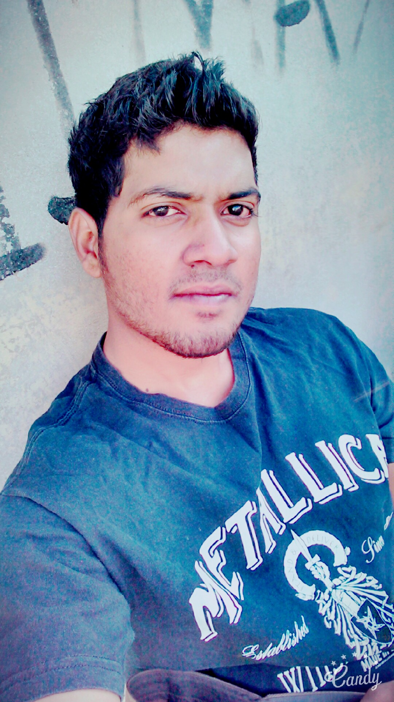

Abdullah
s/o
Muhammad Hafeez
Objectives:
Seeking a challenging multi-role Commercial oriented career within a dynamic and progressive organization where enthusiasm, dedication and the ability to timely manage tasks effectively are prerequisite in driving the organization forward.
Personal Information:
- Date of Birth : 15th DEC, 1994
- Religion : Islam
- Nationality : Pakistani
- Marital Status : Single
- Domicile/P.R.C : Sindh/Karachi
- C.N.I.C : 42401-4737739-9
Qualification:
- Metric from Board of Secondary Education Karachi.
- Intermediate from Inter board, Karachi.
- BS in Software Engineering from virtual University (Continue)
Experience:
- I have worked in The ANGLOPHILE INSTITUTE as a computer teacher.
- I have worked in Millennium�s Print Media Corner as a Graphics Designer.(3 years)
- I have worked in DICC as a Graphics Designer (2 Years)
- I have worked in MERCHANT Designers as Logo Designer (1 Year)
- I have worked in UP Work formerly O desk as a UI|UX designer.(Freelance)
- I have worked in Carrera IT Consulting as Branding Developer. (Still work)
- I have worked in LDC as Creative Logo designer. (Still work)
Computer Skills:
- Operating Computer.
- Ms. Office 2013.
- Ms.Office Word & Excel Certified.
- Adobe Photoshop CC.
- Adobe Illustrator CC.
- Adobe Dreamweaver CC.
- Adobe After Effect CC.
- FreeHand.
- HTML5.
- Adobe InDesign.
- Git.
- Camtasia 9.
- C++.
- Corel Draw 10.
- Macromedia Dreamweaver.
- UX|UI Designing.
Reference:
Will be furnished on request.